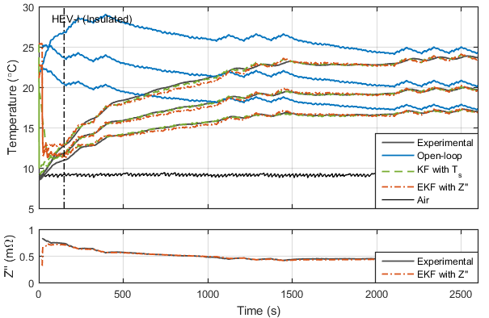

Contents
- Initialise
- Options
- Assign options
- Experimental data
- Parameters and Inputs
- Assign identified parameters
- Load EIS polyfits
- Spectral-galerkin model
- Simulate
- Plot 0: Polyfit of impedance
- Plot 1: Measured vs predicted temperatures
- Plot 2: Radial temperature distribution at selected times
- Plot 3: 2-D Temperature Contour Plot at selected time
- Error analysis 1: RMSE values
- Error analysis 2: Histogram of errors
%-------------------------------------------------------------------------% % 2-D EKF Impedance-Temperature State-Estimator % %-------------------------------------------------------------------------% %{ My name is Robert Richardson (robert.richardson@eng.ox.ac.uk) and I hold the MIT license for this code. An accompanying paper for this code is: % Robert R. Richardson, Shi Zhao, David A. Howey, On-board monitoring of % 2-D spatially-resolved temperatures in cylindrical lithium-ion batteries: % Part I. Low-order thermal modelling, Journal of Power Sources, Vol 326, % 2016, Pages 377-388, http://dx.doi.org/10.1016/j.jpowsour.2016.06.103. I would ask that you cite this paper if you want to use this code for your own research. For further details on the work of the Energy Power Group at Oxford, please see epg.eng.ox.ac.uk. %} % This code implements a Chebyshev Spectral Galerkin 2D thermal model and % an Extended Kalman Filter using electrochemical impedance measurement % input. % Guide to structures used: % 'p': stores [p]arameters and inputs (common to both models) % 'sg': stores [s]pectral-[G]alerkin model inputs/outputs % 'kf': stores [K]alman [f]iltered model inputs/outputs % 'ekf': stores [E]xtended [K]alman [f]iltered model inputs/outputs % 'mult': stores outputs at [mult]iple instances (for both models)
Initialise
clear; close all; clc; addpath(genpath('./Functions')); addpath(genpath('./Data')); pl = abbreviations(); % struct of abbreviations for commonly used strings set(0,'defaultaxeslinewidth',1.0) % plotting preferences set(0,'defaultlinelinewidth',1.4) FS = 10; % fontsize
Options
Below are some options for the user to play around with.
sel_exp = 4; % select exp. (1,2)=uninsulated; (3,4)=insulated sel_eis = 4; % select EIS fit (4=HEV-II; ensures only interp.) sel_error = true; % initialise with error? (otherwise plots EIS fit) sel_thermocouple = 3; % select thermocouple measurement for linear KF % T_1 (core), T_2 (surf left), T_3 (surf mid), % T_4 (surf right). plot_times = [150,800]; % choose times (sec) at which to plot radial dist.
Assign options
exp_info = cell(1,2); switch sel_exp % drive cycle info case {2,3,4}; exp_info{1} = 'HEV-I'; case {1}; exp_info{1} = 'HEV-II'; end switch sel_exp % configuration: insulated/uninsulated case {1,2}; exp_info{2} = 'Uninsulated'; case {3,4}; exp_info{2} = 'Insulated'; end str_info = strcat(exp_info{1},' (', exp_info{2},')');
Experimental data
Load experimental data, struct 'exp', containing current, voltage, temperatures and impedance.
switch sel_exp case 1; load('Data_Uninsulated_1'); case 2; load('Data_Uninsulated_2'); case 3; load('Data_Insulated_1'); case 4; load('Data_Insulated_2'); end exp.Tz1 = -ones(size(exp.t)); % no measurements at right centre exp.Tz2 = -ones(size(exp.t)); % no measurements at left centre
Parameters and Inputs
p = func_parameters(); % assign struct 'p' of known model parameters p = func_inputs_exp(p,exp); % assign model inputs to 'p'
Assign identified parameters
Assign parameters, k_z, h_r, h_l, h_t and h_b, from parameter identification experiments.
% Use identified parameters from either experiment for each configuration. % Loaded data consists of struct 'id' containing fields of parameters. switch sel_exp case {1,2}; load('Identified_Parameters_Uninsulated_2'); % or 1 case {3,4}; load('Identified_Parameters_Insulated_2'); % or 1 end % Assign identified parameters to struct 'p' p.kz = id.kz; % axial thermal conductivity p.hr = id.hr; p.hl = 0; % left/right convection coefficient p.hb = id.hb; p.ht = id.ht; % top/bottom convection coefficient % Display parameters fprintf(char(strcat(... 'Parameters from',{' '},exp_info{2}, ' configuration.\n'))); fprintf('cp\t\t kr\t\t kz\n%.0f \t %.3f \t %.2f \n', p.cp,p.kr,p.kz) fprintf('hr\t\t hb\t\t ht\n%.1f \t %.1f \t %.1f \n\n',... p.hr,p.hb,p.ht)
Parameters from Insulated configuration. cp kr kz 910 0.350 19.00 hr hb ht 16.9 23.3 154.9
Load EIS polyfits
Load EIS data. Data consists of struct 'pol' containing the polyfit of impedance-temperature data.
switch sel_eis case 1; load('Identified_EIS_Uninsulated_1','pol'); case 2; load('Identified_EIS_Uninsulated_2','pol'); case 3; load('Identified_EIS_Insulated_1','pol'); case 4; load('Identified_EIS_Insulated_2','pol'); end % load('./Data/Identified_EIS','pol');
Spectral-galerkin model
sg.N = 2; % no. of basis functions in each direction sg.Ns = sg.N^2; % total no. of states [sg.A,sg.B,sg.C,sg.E,sg.rr,sg.zz,sg.Psi,sg.Te,sg.ye] = ... func_spectral_galerkin(p, sg.N); % calculate state matrices % Prepare simulation sg.t_step = 1; sg.A_d = expm((sg.E\sg.A)*sg.t_step); sg.B_d = (sg.E\sg.A)\((sg.A_d-eye(size(sg.A_d)))*(sg.E\sg.B)); % Initialise states, inputs and outputs sg.x = zeros(length(p.t),length(sg.A)); % states switch sel_error % initialise with error or not case 0; sg.x(1,:) = [7.3464 -0.0253 -0.0614 -0.3167]; % correct inits case 1; sg.x(1,:) = [22.2855 1.98354 4.56853 0.305134]; % with error end sg.u = zeros(size(sg.B,2),length(p.t)); % inputs sg.y = zeros(length(p.t),size(sg.C,1)); % outputs
Simulate
Initialise models
ol = sg; % open-loop model (copy spectral galerkin) kf = func_init_kf(sg, 5e-3, 0.3, 1); % linear kalman filter ekf = func_init_kf(sg, 5e-3, 3e-5, 1); % extended kalman filter (with Z) sel_meas = ... % assign selected thermocouple measurement for linear KF func_thermocouple2measurement(sel_thermocouple); % Loop over time steps for i = 1:length(p.t)-1 ui = [p.Q(i)/p.Vb; 1]; % input i meas_vec = [-1,-1,exp.Tr1(i),exp.Tr2(i),... exp.Tr2z2(i), exp.Tr2z1(i)]; % vector of all measurements at i sg = func_predict(sg,i,ui); % open-loop predict kf = func_predict(kf,i,ui); % KF predict kf = func_measure(kf,i,meas_vec,sel_meas); % KF measure ekf = func_predict(ekf,i,ui); % EKF predict Zm = exp.Im(i); if Zm~=-1; ekf = func_measure_nl(ekf,i,Zm,pol.p); end % EKF measure end % Rename outputs as something more intuitive sg = func_rename_outputs(sg); kf = func_rename_outputs(kf); ekf = func_rename_outputs(ekf); ekf.Im = ekf.Zp;
Plot 0: Polyfit of impedance
plot_eis = ~sel_error; % plot EIS fit (if running with no initial error) if plot_eis == 1; pol.T = sg.Tm(exp.tm)'; pol.Z = exp.Im(exp.tm); ids = []; for i = 2:length(pol.T) % enforce monotonic increasing if pol.T(i)<pol.T(i-1); ids = [ids,i]; end end pol.T = pol.T(ids); pol.Z = pol.Z(ids); pol.Tnew = min(pol.T):0.1:max(pol.T); pol.Znew = interp1(pol.T,pol.Z,pol.Tnew); pol.T = pol.Tnew; pol.Z = pol.Znew; % Polyfit pol.p = polyfit(pol.T,pol.Z,2); pol.Tcont = linspace(min(pol.T)-1, max(pol.T)+1); pol.Zcont = polyval(pol.p,pol.Tcont); % Plot figure('position',[700 100 400 300]); hold on; plot(pol.T,pol.Z,'o','markersize',5,'color',pl.b) plot(pol.Tcont,pol.Zcont,'linewidth',1.6,'color',pl.r) xlim([pol.Tcont(1),pol.Tcont(end)]) xlabel('Temperature (\circ C)') ylabel('Im(Z) (\Omega)') legend('Data','Polynomial fit') tightfig(); end
Plot 1: Measured vs predicted temperatures
(a) Temperature profiles: T(top, centre) and T(bottom, centre) vs. time (b) Heat generation profile: Q vs. t
figure('position',[100 100 700 420]) % --------------- Plot (a): Temperature Evolution --------------- % hax(1) = subplot(4,1,1:3); hold on; ha = plot(exp.t,exp.Tenv, 'k-', 'linewidth',1); % air % Experimental hEXP = plot(exp.t,exp.Tr1,'-','color',[.3 .3 .3],'markersize',5); plot(exp.t,exp.Tr2z2,'-','color',[.3 .3 .3],'markersize',5); plot(exp.t,exp.Tr2,'-','color',[.3 .3 .3],'markersize',5); % Open-loop hSG = plot(p.t,sg.Tr1,'color',pl.b); plot(p.t,sg.Tr2, 'color',pl.b); plot(p.t,sg.Tr2z2, 'color',pl.b); % Kalman Filter (with T_3) plot(p.t,kf.Tr2z2, 'color',pl.g,'linestyle','--'); plot(p.t,kf.Tr2, 'color',pl.g,'linestyle','--'); hKF1 = plot(p.t,kf.Tr1, 'color',pl.g,'linestyle','--'); % plot(p.t,f1.Tm,'color',fl.g,'linestyle','--'); % mean % Extended Kalman Filter (with Z) plot(p.t,ekf.Tr2z2,'color',pl.r,'linestyle','-.'); plot(p.t,ekf.Tr2,'color',pl.r,'linestyle','-.'); hKF_nl = plot(p.t,ekf.Tr1,'color',pl.r,'linestyle','-.'); % Axis limits/labels/legend xmax = 2600; xlim([0 xmax]); ylims = get(gca,'ylim'); set(gca,'xticklabel',[]); ylabel('Temperature (\circC)'); set(gca,'fontsize',FS); hleg(1) = legend([hEXP hSG hKF1 hKF_nl ha],... 'Experimental','Open-loop','KF with T_s','EKF with Z''''','Air',... 'location','best'); % Plot tframes line tframes = [plot_times,xmax]; plot([tframes(1), tframes(1)],[ylims(1), ylims(2)],'k-.','linewidth',1) text(xmax*0.03,ylims(2)*0.98,str_info,... 'fontsize',FS,'verticalalignment','top','horizontalalignment','left') % --------------- Plot (b): Impedance Profile --------------- % hax(2) = subplot(4,1,4); hold on; plot(exp.tm, 1e3*exp.Im(exp.tm),'-','color',[.3 .3 .3]); plot(exp.tm, 1e3*ekf.Im(exp.tm),'-.'); xlim([0 xmax]); ylabel('Z'''' (m\Omega)'); xlabel('Time (s)'); hleg(2) = legend('Experimental','EKF with Z'''''); set(gca,'fontsize',FS) % ------ Post-process ------ % linkaxes([hax(1), hax(2)],'x'); % link axes tightfig(); % compact figure for i = 1:2; flushLegend(hleg(i),hax(i),'se'); end % flush legend
Plot 2: Radial temperature distribution at selected times
% ------ Prepare ------ % s_plot = ekf; % choose which model to use for contour plot for ii = 1:length(tframes) ts = tframes(ii); % SG uu = s_plot.Psi'*s_plot.x(ts-1,:)'; nfac = sqrt(size(s_plot.Psi,2)); uu = reshape(uu,length(s_plot.rr)/nfac,length(s_plot.zz)/nfac); s_plot.Te = reshape(s_plot.Te,length(s_plot.rr)... /nfac,length(s_plot.zz)/nfac); s_plot.ts.Tr = uu(round(size(uu,2)/2),:); s_plot.ts.Tr = s_plot.ts.Tr + s_plot.Te(round(size(s_plot.Te,2)/2),:); s_plot.ts.T = reshape(uu,length(s_plot.rr)/nfac,length(s_plot.zz)/nfac); s_plot.ts.T = s_plot.ts.T + reshape(s_plot.Te,length(s_plot.rr)... /nfac,length(s_plot.zz)/nfac); % Assign values to a structure containg multiple (3) tframes mult(ii).sg = s_plot; mult(ii).ts = ts; end % ------ Plot ------ % figure('position',[100 100 600 200]) for i = 1:length(tframes) subplot(1,3,i); hold on; plot(mult(i).sg.rr(1:nfac:end),mult(i).sg.ts.Tr); xlim([p.r1 p.r2]); xlabel('r (m)'); if i == 1; ylabel('Temperature (\circC)'); end title(sprintf('\\it{t = %0.2i s}', mult(i).ts)) set(gca,'fontsize',FS); end
Plot 3: 2-D Temperature Contour Plot at selected time
figure('position',[100 100 300 385]); hold on; contourf(s_plot.rr(1:nfac:end),s_plot.zz(1:nfac),mult(2).sg.ts.T,10); contourf(-s_plot.rr(1:nfac:end),s_plot.zz(1:nfac),mult(2).sg.ts.T,10); rectangle('Position',[-p.r1 0 2*p.r1 p.z2],... 'facecolor',[.8 .8 .8],'edgecolor','none') str = sprintf('\\it{t = %0.2i s}', mult(2).ts); title(str,'fontweight','n') pbaspect([2.5*(p.r2-p.r1),p.z2,1]) set(gca,'xtick',[]); set(gca,'ytick',[]); xlabel('r'); ylabel('z'); colorbar set(gca,'fontsize',FS)
Error analysis 1: RMSE values
for i = 1:3 switch i case 1; s = sg; case 2; s = ekf; case 3; s = kf; end sum_res(i) = sum((s.Tr1-exp.Tr1').^2) + sum((s.Tr2z1-exp.Tr2z1').^2)... + sum((s.Tr2z2-exp.Tr2z2').^2) + sum((s.Tr2-exp.Tr2').^2); end fprintf('\nRMSE values:\n') fprintf('\nOL: %.1f\n', sum_res(1)) fprintf('\nEKF: %.1f\n', sum_res(2)) fprintf('\nKF: %.1f\n', sum_res(3)) sum_norm = [1, sum_res(2)/sum_res(1), sum_res(3)/sum_res(1)];
RMSE values: OL: 330642.2 EKF: 19553.6 KF: 3816.6
Error analysis 2: Histogram of errors
Calculate error data
kf = func_hist_errors(kf, exp, xmax); ekf = func_hist_errors(ekf, exp, xmax); % Plot figure('position',[100 100 350 280]) h1 = histogram(kf.eTr1); hold on; h2 = histogram(ekf.eTr1); xlim([-1.5 1.5]) xlabel('Error (\circC)') ylabel('Number of points') h1.BinWidth = .1; % uniform bin width h2.BinWidth = .1; % Text for i = 1:2 if i == 1; rmsi = ekf.rmsr1; else rmsi = kf.rmsr1; end rms_str = sprintf(... '$|\\overline{\\varepsilon}_{EKF}| = %.1f ^\\circ C $',rmsi); text(-1.35,275+50*i,rms_str,pl.fs,FS,'interpreter','latex') end hleg = legend([h1,h2],'KF with T_3','EKF with Z'''''); flushLegend(hleg);